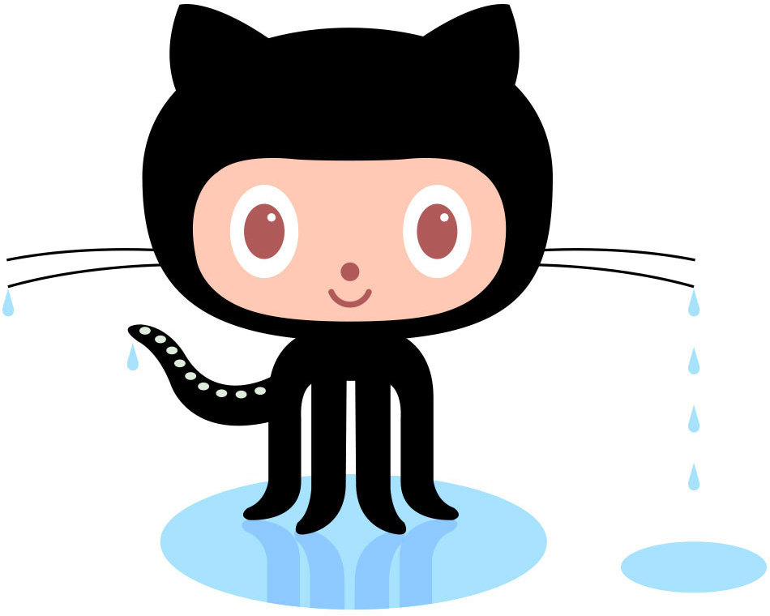

Q. What is a version Control System?
A. Version control systems are software tools that help software teams manage changes to source code over time.
Q. What is Git?
A. Git is a DevOps tool used for source code management.
Q. What is Github?
A.GitHub is a for-profit company that offers a cloud-based Git repository hosting service.
Q. What is the difference between git and github?
A. While Git is a tool that's used to manage multiple versions of source code edits that are then transferred to files in a Git repository, GitHub serves as a location for uploading copies of a Git repository.
Q. Who started github and how was it started?
A.he GitHub service was developed by Chris Wanstrath, P. J. Hyett, Tom Preston-Werner, and Scott Chacon using Ruby on Rails, and started in February 2008. The company, GitHub, Inc., has existed since 2007 and is located in San Francisco.
Q. What company owns it now?
A. Microsoft Corporation
Q. How much does Github account Cost?
A. There is three different subscribtions, There is a free, $4, and $21 per month options.
Q. What is the octocat?
A. the mascot of the source-code hosting service GitHub.
Git/Github Terms:
- Repository- A repository contains all of the project files (including documentation), and stores each file's revision history.
- Commit- is an individual change to a file (or set of files).
- Fork- A fork is a personal copy of another user's repository that lives on your account.
- push- To push means to send your committed changes to a remote repository on GitHub.com
- Pull requests- Pull requests are proposed changes to a repository submitted by a user and accepted or rejected by a repository's collaborators.
- workflows- A workflow is a configurable automated process that will run one or more jobs.
- issues- Issues are suggested improvements, tasks or questions related to the repository.
- raw button- you can view or copy the raw content of a file without any styling.
- blame button -describes the last modification to each line of a file
